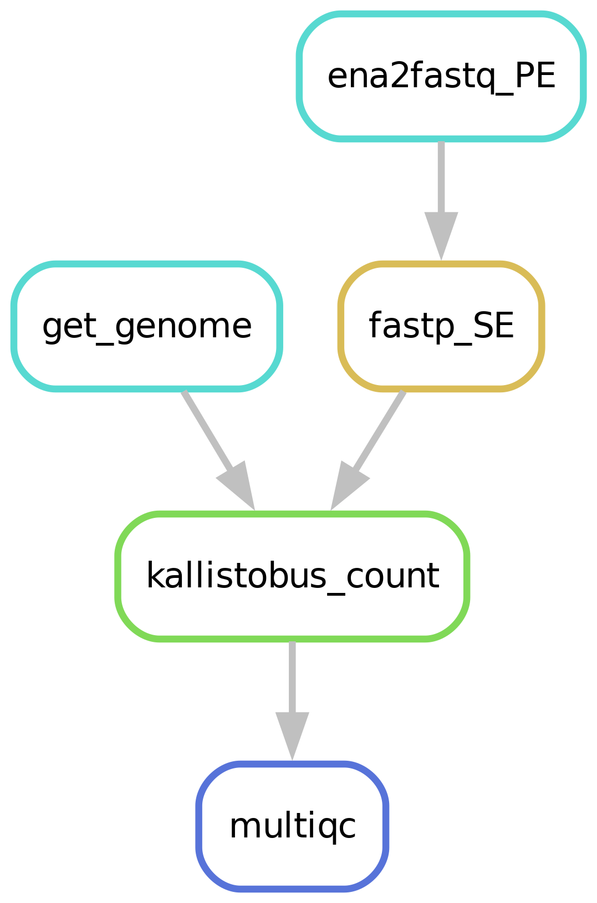

seq2science
Getting started
Workflows
Using the results
Extensive docs
Extra resources
Frequently Asked Questions (FAQ)
seq2science
»
scRNA-seq
Edit on GitHub
scRNA-seq
¶
Pipeline steps
¶

best practices
¶
How to get the pipeline started?
¶
2.6.1 Filling out the samples.tsv
¶
2.6.2 Filling out the config.yaml
¶